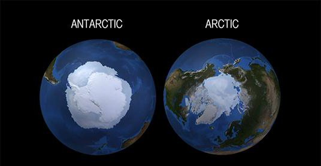

Полюс - точка, в которой ось вращения Земли пересекается с поверхностью Земли. Имеется два географических полюса: Северный полюс — находится в Арктике (центральная часть Северного Ледовитого океана) и Южный полюс — находится в Антарктиде.
Выберите на картинке нужный полюс:
Другое: